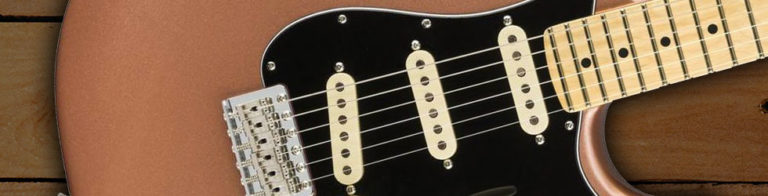

Leo Fender was the first guitar builder to equip a solid body guitar with single coil pickups. These set the standard for what a guitar should sound like – and even look like. Over 60 years on, single coil pickups remain largely the same design. They’re made using a magnetic pole wrapped in wire that ‘picks up’ frequencies and subsequently sends them into an amp. Single coils have a distinct twangy, glassy tone. They sound crisp and bright, with less of an emphasis on midrange frequencies. Many pickup designers might describe their sound as full and broad.
Because they only consist of the one pole piece, they have a lower headroom than their humbucker counterparts. This means they have an overall smaller output but detect more interference and are acutely responsive to how you pick the strings. They can get quite noisy when you crank your amp or add substantial amounts of gain, so it’s a bit of a balancing act to get a great sound when playing at high volumes. Modern “hum-cancelling” designs from the likes of Fender go some way to eliminate any unwanted feedback.
Famous players like Jimi Hendrix, Mark Knopfler and John Mayer developed their distinct tones with the use of single coils. Most single coil guitars are attributed to rock, indie, folk and blues music. But you can still get excellent hard rock and metal tones with a bit of tweaking.
Guitarists will tend to say that single-coil pickups have a brighter or twangier sound, often describing them as having more of a bite. When coupled with an overdriven valve amp however, they can really sound gritty. Alternatively, turn that overdrive sound down and you get a chiming glassy tone often associated with the likes of 60s-style guitar sound, where you get a clean tone that cuts through the mix.
Although you can use a single-coil guitar for any style of music you wish, they are often favoured by blues, country, rockabilly and surf guitarists. However, in modern times, with many different musical genres and styles taking over the airwaves, they are favoured by those who want to be able to flit between softly-does-it melodies to harsh riffs in an instant. The likes of Bruce Springsteen favours Telecasters, whereas Simon Neil from Biffy Clyro and the late Jimi Hendrix go hand-in-hand with Stratocasters. The capabilities are endless, and you are only hindered by your imagination.
By far the most popular and common single-coil pickup types are Strat- and Tele-style pickups. However, there are a multitude of other varieties worth consideration that each offer their own distinct tonal personalities and performance characteristics. The Gibson P-90 (in soapbar and dog-ear housings) is a very popular choice, but Gibson’s similar and earlier design known as the “Charlie Christian” pickup featuring a single blade pole piece is also a cool alternative with cult appeal, especially among jazz, country and blues players.

The Fender Jazzmaster and Franz pickups (the latter commonly found in Guild electrics from the Fifties) look similar to P-90 pickups, but each has its own distinct voice, as do Fender Jaguar pickups, which have similar dimensions to Strat pickups but are surrounded by metal claws to focus a parallel magnetic field along each string.
Other interesting classic, original single-coil pickup designs include the “lipstick tube” pickups found on many Danelectro and Silvertone guitars, Gretsch Hilo’Tron pickups, DeArmond/Dynasonic pickups commonly used by Gretsch, Burns Tri-Sonic (a key component of Brian May’s tone), Rickenbacker “toaster top” and variations of the Sixties “gold foil” design found in Teisco and Harmony guitars.